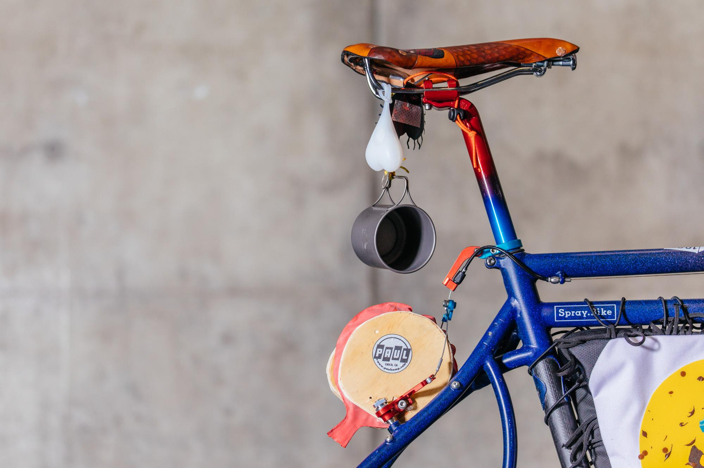

Dont you hate the guessing game that comes with buying a new saddle?
Hopefully this site can give you some options that will fit your butt type.
If youre here, you either:
- have a bin full of saddles that have been tested unsuccessfully
- always use the same saddle on all your bikes (n+1!)
- are too scared to try something new.
- gotta catchem all!
Check out
this page for some thought morsels from Sheldon Brown.
More info on what difference rails make is on
this page
Otherwise jump straight into the
seatdata
